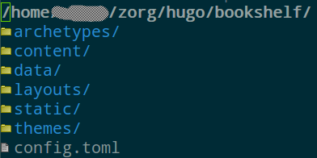

Emacs 联合 Hugo 管理博客
1 简介
2 使用 Hugo
下载，安装过程免去，见官网的quick start 。
2.1 本地使用
到 ~/zorg/hugo/ 生成一个静态站点 使用命令：
hugo new site bookshelf
这样，在 hugo 目录下就生成了一个目录 bookshelf ，里面目录的结构如下图：

图 1: bookshelf 的结构图
好了，一个静态博客建成。让我们写一篇新的博客。
hugo new post/godfather.md
在 bookshelf 下的 content/post 里有一篇博客生成，格式是 markdown 。写几句话吧。
hugo 支持 org-mode markdown 还有其他格式。
hugo 有一个内置的 server。通过这个 server 你可以在本地浏览器上预览博文。预览命令：
hugo server --buildDrafts
你会看到输出：
Started building sites ...
Built site for language en:
1 of 1 draft rendered
0 future content
0 expired content
1 regular pages created
8 other pages created
0 non-page files copied
0 paginator pages created
0 tags created
0 categories created
total in 10 ms
Watching for changes in /home/cliyh/zorg/hugo/bookshelf/{data,content,layouts,static}
Serving pages from memory
Web Server is available at http://localhost:1313/ (bind address 127.0.0.1)
Press Ctrl+C to stop
注意：
1 of 1 draft rendered
这个 draft 就是刚刚的 godfather.md 。但是这个时候我们通过 http://localhost:1313/ 不能预览博文，因为这个静态网站里有一个很重要的文件需要修改， config.toml .
我使用主题 mainroad , 在这里下载。 这个主题里有一个现成的 config.toml 照着改一下。
2.2 发布到万维网
写博客一是为了记录而是为了交流。发布到万维网上是交流的最好方式，全世界都是你的潜在读者。使用 hugo 发布到互联网的方式有很多，见这里。我们重点讨论使用 github 放置博客。
即使使用 github，也有很多途径。我们使用 gh-pages 分支的方式。你可以配置 github 使用 master 分支或者 gh-pages 分支来存放博客。使用 gh-pages 方式有些复杂，但是这种方式有其独特优点：
- 使用 gh-pages 可以使原文件和生成的静态博客在不同的分支上，进行独立的版本控制。
- 使用 gh-pages 默认使用 Hugo 生成的 public 文件夹存放静态博客。
我准备用 https://emacsun.github.io/myblog 来放置这个博客（或许你读这篇文章的时，这个站点已被删掉。这仅仅是一个测试博客，不影响你按照本文的步骤来建立你自己的博文站点）。你需要把这个地址放到 config.toml 里：
baseurl = "https://emacsun.github.io/myblog"
然后在终端切换到 bookshelf suozai 执行：
hugo
是的，只用执行 hugo 不带任何参数（当然，你也可以去 Hugo 的官网查查此时可以带哪些参数）。输出结果类似为：
Started building sites ... Built site for language en: 0 draft content 0 future content 0 expired content 2 regular pages created 10 other pages created 0 non-page files copied 3 paginator pages created 1 tags created 0 categories created total in 21 ms
可以看到我这里有两篇 regular pages created。这两篇博文是我刚刚创建的。另外，执行完 hugo 命令之后，你会在 bookshelf 目录下看到 public 目录，该目录存放了静态博客所需要的一切文件。
为了分开管理原文件和静态博客文件，我们使用 gh-pages 分支来存放博客，使用 master 分支来存放原文件。我们需要达成的目标是在主目录里是 master 分支，在 public 目录里是 gh-pages 分支。
这个过程需要执行一下命令，首先生成一个分支 gh-pages
git checkout --orphan gh-pages
然后：
git reset git commit --allow-empty -m "initial commit fro gh-pages" git checkout --force master git worktree add public gh-pages
如此我们进入主目录就是 master 分支，在这个分支中执行的 add,commit,push 都与 master 分支有关。 进入 public 子目录就是 gh-pages 分支，在这个分支中 add,commit,push 都与 gh-pages 分支有关。两个分支互不干扰。
关于 Hugo 的使用，到此为止。
接下来介绍使用 Emacs 的插件 easy-hugo
3 使用 easy-hugo
easy-hugo 的配置：
(setq easy-hugo-basedir "~/zorg/hugo/bookshelf/") (setq easy-hugo-url "https://yourblogdomain") (setq easy-hugo-sshdomain "blogdomain") (setq easy-hugo-root "/home/blog/") (setq easy-hugo-previewtime "300") (setq easy-hugo-default-ext ".org")
总体而言，在 ubuntu 使用 Emacs 要比在 windows 方便很多。免去诸多配置。接下来就是使用 easy-hugo . 需要注意，如果使用的是 spacemacs 要把， easy-hugo-mode 设置为默认 emacs 绑定的快捷键，而不是使用 evil 绑定的快捷键。
另外，如果出现问题，还需要到命令行里使用 hugo 。 那里有更多调试信息，告诉我们问题出现在哪里。